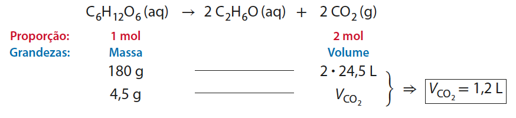
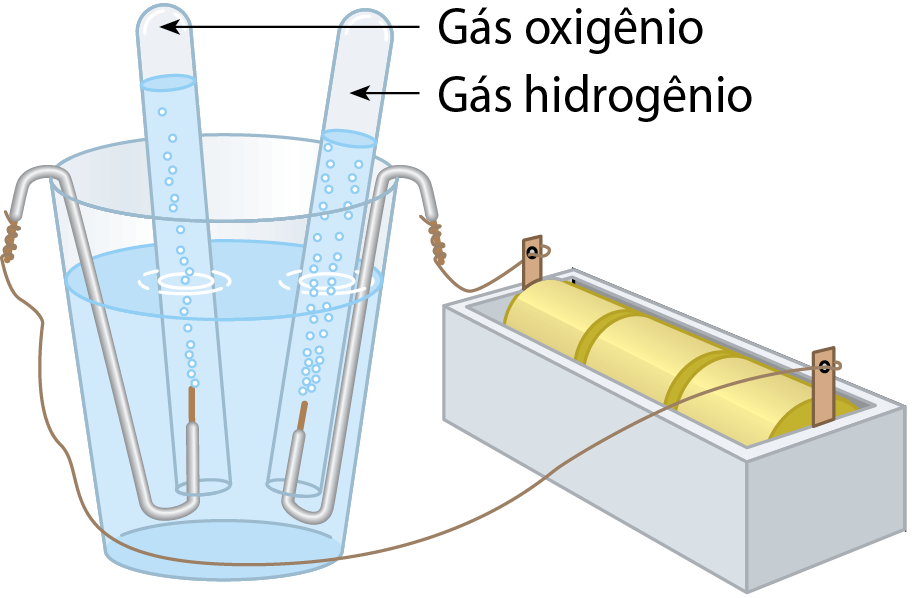
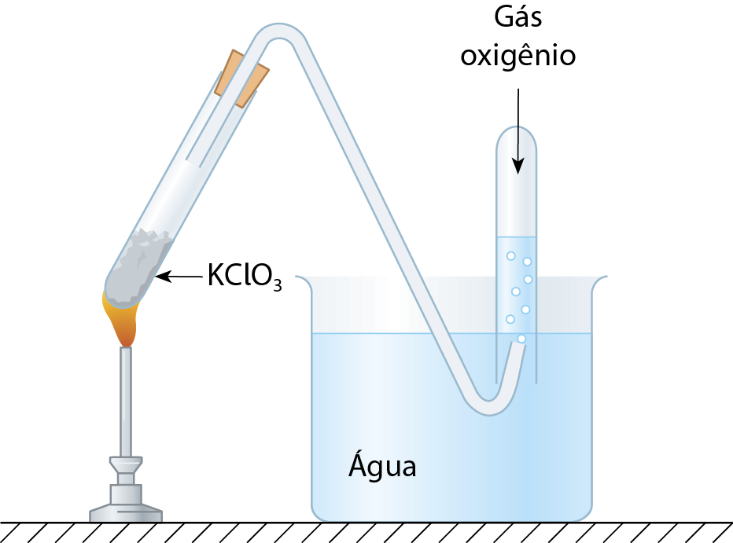

Relação estequiométrica envolvendo volume gasoso
Lei volumétrica de Gay-Lussac
No início do século XIX, o francês Joseph Louis Gay-Lussac (1778-1850) realizou uma série de experimentos nos quais mediu, nas mesmas condições de pressão e temperatura, o volume de gases envolvidos em reações químicas.
Consideremos a transformação dos gases hidrogênio e nitrogênio em gás amônia, supostos gases ideais (consideração que despreza a atuação de forças atrativas entre as moléculas e as considera pontos sem dimensão), a pressão e temperatura constantes.
Nessa reação química, exemplos dos volumes dos reagentes que efetivamente se transformam em determinado volume de produto são mostrados a seguir.
| Diversos experimentos: | nitrogênio + | hidrogênio → | amônia |
|---|---|---|---|
| 1ᵒ | 50 mL | 150 mL | 100 mL |
| 2ᵒ | 100 mL | 300 mL | 200 mL |
| 3ᵒ | 500 mL | 1.500 mL | 1.000 mL |
| 4ᵒ | 1 L | 3 L | 2 L |
| 5ᵒ | 2 L | 6 L | 4 L |
| 6ᵒ | 3 L | 9 L | 6 L |
| 7ᵒ | 4 L | 12 L | 8 L |
De uma repetição para a outra, variam os volumes dos participantes gasosos. Mas a proporção entre os volumes desses participantes é constante.
Fundamentado em resultados experimentais como esses que utilizamos como exemplo, Gay-Lussac pôde enunciar que os volumes de substâncias gasosas participantes de uma determinada reação química, quando medidos nas mesmas condições de pressão e temperatura, mantêm entre si uma proporção fixa que pode ser expressa por meio de números inteiros e pequenos. Esse enunciado ficou conhecido como lei volumétrica de Gay-Lussac.
Interpretação da lei volumétrica de Gay-Lussac
Com base nas ideias aceitas atualmente, pode-se propor uma explicação para a lei de Gay-Lussac. Primeiramente, perceba que a proporção entre volumes dos participantes gasosos é a mesma que a existente entre mols. Considerando o exemplo anteriormente mencionado:
Para uma amostra de gás ideal que esteja submetida a determinada pressão e determinada temperatura constantes, o volume depende exclusivamente da quantidade em mols de gás nessa amostra. Então, como o volume de diferentes gases ideais nas mesmas condições de pressão e temperatura é diretamente proporcional à quantidade em mols, a proporção entre os volumes de gases que participam de uma reação (com pressão e temperatura constantes) é a mesma proporção que existe entre as quantidades em mols desses participantes. Essa é uma interpretação da lei volumétrica de Gay-Lussac, exemplificada na Figura 3.

Figura 3. Esquematização da proporção volumétrica (nas mesmas condições de pressão e temperatura) entre reagentes e produto de uma reação química envolvendo gases. (Átomos representados por esferas em cores meramente ilustrativas. Fora de proporção.)
Relação estequiométrica que inclua volume gasoso
Voltemos à situação proposta no item 1 deste capítulo, em que calculamos a quantidade em mol e a massa do dióxido de carbono resultante da transformação química de 4,5 g de glicose.
Suponha que nosso interesse fosse saber o volume de gás carbônico liberado dentro da massa do pão, nas condições ambientes (25 °C e 1 atm), no intervalo de tempo em que ela permaneceu em repouso antes de ir ao forno. Nesse caso, partindo da proporção dos coeficientes, estabelecemos uma proporcionalidade entre massa de glicose que reagiu e volume de gás liberado.
Consultando, em fontes confiáveis de informação, o volume molar de gás ideal referente às condições ambientes (25 °C e 1 atm), verificamos que ele é 24,5 L/mol. Isso significa que 1 mol de um gás qualquer, suposto de comportamento ideal, tem volume de 24,5 L, a 25 °C e 1 atm. Assim, podemos calcular o volume de dióxido de carbono gasoso:

Exercícios
10.Ácido clorídrico é um nome pelo qual é conhecido o gás cloreto de hidrogênio, HC l, quando em solução aquosa. A produção industrial do gás cloreto de hidrogênio ocorre por meio da reação entre os gases hidrogênio, H₂, e cloro, C l₂.
- a. Equacione a reação envolvida.
- b. Qual é a proporção estequiométrica entre as quantidades em mols de reagentes e produto?
- c. Qual é a proporção entre os volumes de reagentes e produto, medidos na mesma pressão e temperatura?
11. A passagem de corrente elétrica por meio de uma solução aquosa de sulfato de sódio, usando três pilhas em série e fios de um metal que não reaja durante o processo, provoca a decomposição da água nos gases hidrogênio, H₂, e oxigênio, O₂.

Esquematização da decomposição da água por eletrólise usando pilhas e eletrodos metálicos inertes.
(Representação fora de proporção; cores meramente ilustrativas.)
- a. Equacione a reação envolvida.
- b. Explique por que os volumes dos dois produtos (nas mesmas condições de pressão e temperatura) não são iguais e estabeleça uma previsão da relação entre esses volumes.
12. Durante um churrasco, foram queimados 2,4 kg de carbono grafite, C (graf), constituinte principal do carvão. Essa queima ocorre de acordo com a seguinte equação química:
C (graf) + O₂ (g) → CO₂ (g)
Nessa reação química, carbono grafite e gás oxigênio são reagentes e dióxido de carbono (gás carbônico) é produto. Considere que os volumes desses gases fossem medidos a 25°C e 1 atm, situação em que o volume molar dos gases ideais é 24,5 L.
- a. Determine o volume do oxigênio consumido.
- b. Determine o volume de gás carbônico produzido.
13. O gás oxigênio é extraído industrialmente do ar atmosférico. Em laboratório, pode ser obtido pela decomposição do KClO₃ sólido que, aquecido numa aparelhagem como a ilustrada a seguir, produz KCl sólido e O₂ gasoso.

Para produzir 500 mL de O₂, recolhido a 30 °C e 1 atm, qual deve ser a massa de KC lO₃ decomposta?
(Dado: Volume molar de gás ideal a 30 °C e 1 atm = 25 L)